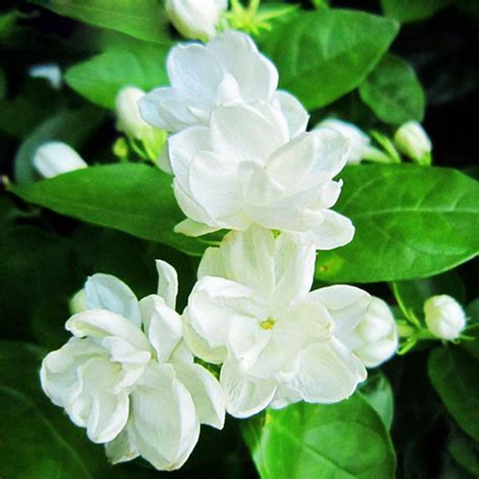

Flower Port
The colour red is often seen as a symbol of romantic love, passionate affection, and desire.

The lotus flower is an aquatic perennial. Sometimes mistaken for the water-lily, distinctively different structure.

Common jasmine is a climbing shrub that can grow up to 8 metres tall and the colour is white.